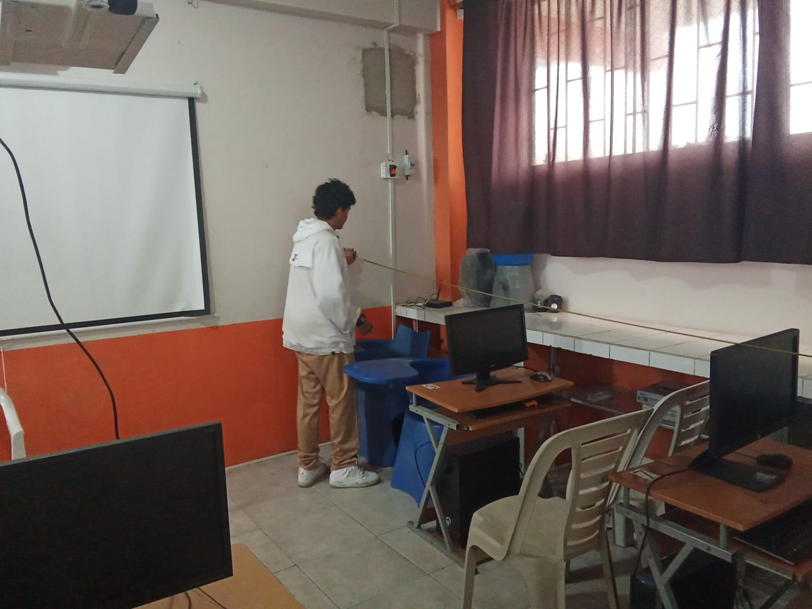
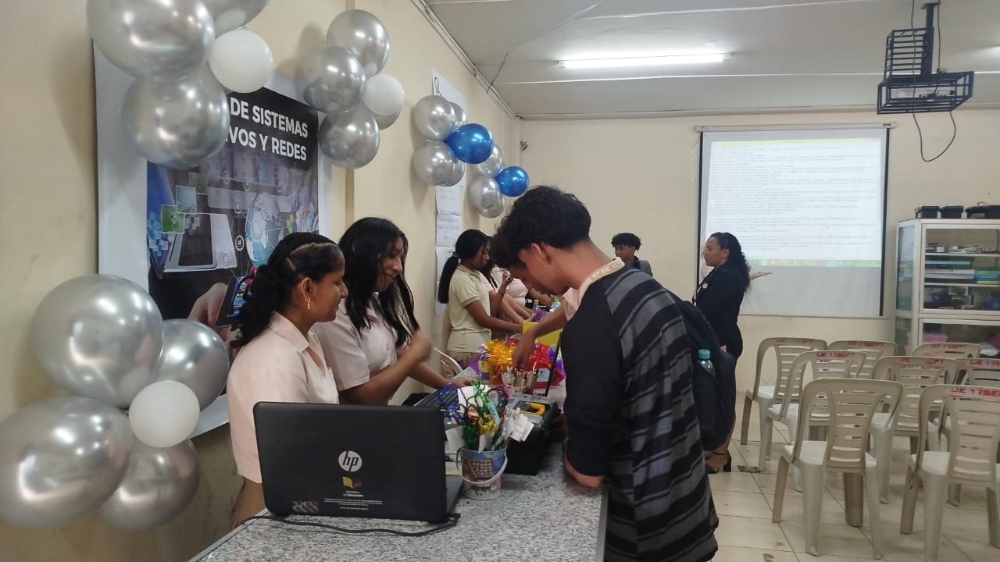
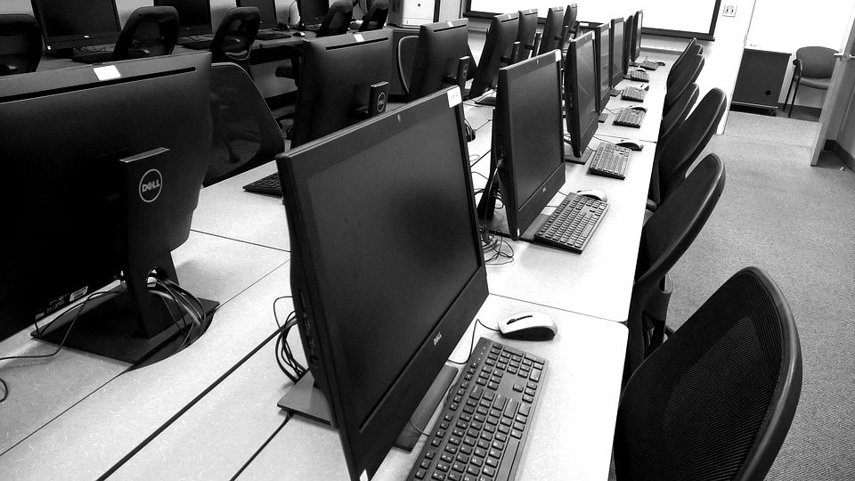

Anios de formacion progresiva en tecnologia aplicada.
Plan de Estudio
Descubre cómo se organiza tu formación a lo largo de la carrera y qué contenidos te prepararán progresivamente para el ámbito tecnológico y laboral.
Vista general
Materias tecnicas integradas entre software, redes y soporte.
Etapa final con enfoque de profesionalizacion y practica real.
Tabla resumida por anio
| Anio | Enfoque principal | Materias tecnicas clave | Resultado esperado |
|---|---|---|---|
| 1ro | Fundamentos | Informatica basica, logica, ofimatica, sistemas operativos | Base tecnica para avanzar a desarrollo y redes |
| 2do | Construccion | Programacion estructurada, redes I, hardware, bases de datos, web | Capacidad para resolver problemas tecnicos reales |
| 3ro | Integracion | POO, redes II, sistemas de red, emprendimiento, proyecto | Perfil listo para empleo inicial o continuidad universitaria |
1º Primero de Bachillerato
En este primer nivel de formación, el estudiante inicia su acercamiento al mundo de la informática y la tecnología, adquiriendo conocimientos básicos y habilidades esenciales que servirán como base para los niveles posteriores. Se fortalece el uso responsable de las herramientas digitales, el razonamiento lógico y la comprensión del funcionamiento de los sistemas informáticos.
Aprenderás:
- Informática básica: Introducción a los componentes del computador, tipos de software y conceptos fundamentales de tecnología aplicada.
- Lógica y algoritmos: Desarrollo del pensamiento lógico mediante la resolución de problemas y la creación de secuencias de instrucciones.
- Ofimática avanzada: Manejo eficiente de herramientas ofimáticas para la elaboración de documentos, hojas de cálculo y presentaciones profesionales.
- Sistemas operativos: Conocimiento del funcionamiento, características y uso básico de los principales sistemas operativos.

2º Segundo de Bachillerato
En este nivel el estudiante fortalece sus competencias técnicas, avanzando hacia áreas más específicas de la informática y la tecnología. Se desarrollan habilidades en programación, redes, mantenimiento y diseño web, combinando la teoría con la práctica para una mejor comprensión de los sistemas informáticos.
Aprenderás:
- Programación estructurada: Introducción a la programación mediante estructuras lógicas, control de flujo y resolución de problemas.
- Redes I Fundamentos de redes de computadoras, tipos de redes, dispositivos y conceptos básicos de conectividad.
- Mantenimiento de hardware: Diagnóstico, mantenimiento y reparación básica de equipos de computación.
- Base de datos inicial: Conceptos fundamentales de bases de datos, almacenamiento de información y manejo básico de datos.
- Diseño web básico: Creación de páginas web sencillas utilizando principios básicos de diseño y estructura.

3º Tercero de Bachillerato
En este último nivel de formación, el estudiante consolida los conocimientos adquiridos durante la carrera, integrando áreas clave como programación, redes y sistemas operativos. Además, se fomenta el espíritu emprendedor y la aplicación práctica de los conocimientos mediante proyectos o prácticas, preparando al estudiante para el mundo laboral o estudios superiores.
Aprenderás:
- Programación orientada a objetos: Desarrollo de aplicaciones utilizando conceptos como clases, objetos y reutilización de código.
- Redes II: Profundización en redes de computadoras, configuración avanzada y solución de problemas de conectividad.
- Sistemas operativos de red: Administración básica de sistemas operativos orientados a redes y servidores.
- Emprendimiento tecnológico: Desarrollo de ideas de negocio vinculadas al área tecnológica y uso de la innovación.
- Proyecto integrador o prácticas: Aplicación de los conocimientos adquiridos en proyectos reales o prácticas profesionales.

Programas y Materiales
Recursos tecnológicos que acompañan tu proceso de aprendizaje.
Durante su formación, el estudiante utilizará herramientas y recursos tecnológicos esenciales para desarrollar sus habilidades prácticas en informática y redes. Los laboratorios del colegio cuentan con estos mismos recursos, lo que garantiza un aprendizaje práctico y acorde a la formación recibida.

Programación
Lenguajes y lógica para crear soluciones.
- C++
- PSeInt
- Visual Basic
Diseño Web
Tecnologías y herramientas para la web.
- HTML, CSS
- Editores de Texto
- WordPress y CMS
Redes y Sistemas
Conectividad y administración de sistemas.
- Configuración LAN
- Instalación de SO
- Cableado estructurado
Ofimática
Herramientas productivas para el mundo profesional.
- Word, Excel, PowerPoint
- Google Workspace
- Canva
Soporte Técnico
Diagnóstico, reparación y mantenimiento de equipos.
- Diagnóstico hardware
- Mantenimiento preventivo
- Instalación de software
Preguntas frecuentes
No, cada anio incrementa complejidad y profundidad tecnica.
Si, se realizan practicas y proyectos integradores para consolidar competencias.
Puedes abrir el enlace de malla curricular oficial incluido en esta misma pagina.